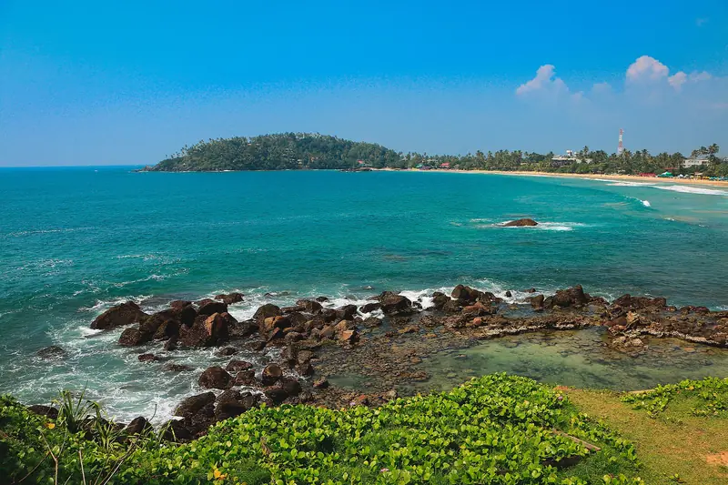
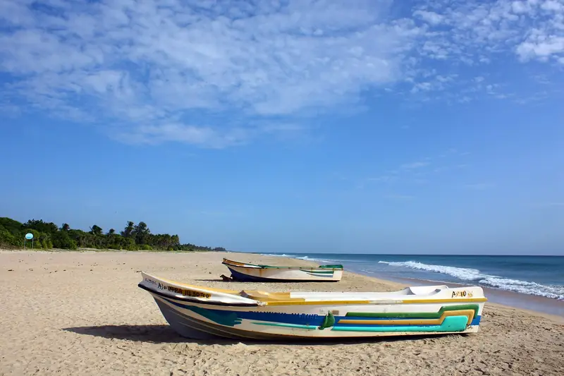
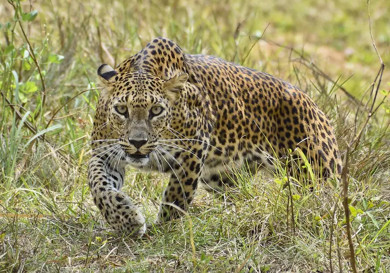

Sigiriya and the Cultural Triangle
A rock fortress, painted caves and ruined royal cities in the dry heart of the island.
Sri Lanka is small, but roads are slow. Three or four areas suit a one or two week trip. Use these guides to pick yours.
A rock fortress, painted caves and ruined royal cities in the dry heart of the island.
The last royal capital, built around a lake and home to the Temple of the Sacred Tooth Relic.
Tea estates, cool mornings, waterfalls and the train ride people talk about for years.

Photo: Abishek Palraj, CC BY-SA 4.0, resizedGalle Fort, surf bays and quiet beaches, with whales offshore in the dry season.

Photo: Anton 17, CC BY-SA 4.0, resizedWide beaches, coral reefs and calm seas from April to September, when the south coast is rough.

Photo: Gerard Mendis, CC BY-SA 4.0, resizedLeopards in Yala, elephants in Udawalawe, and the old rainforest of Sinharaja.